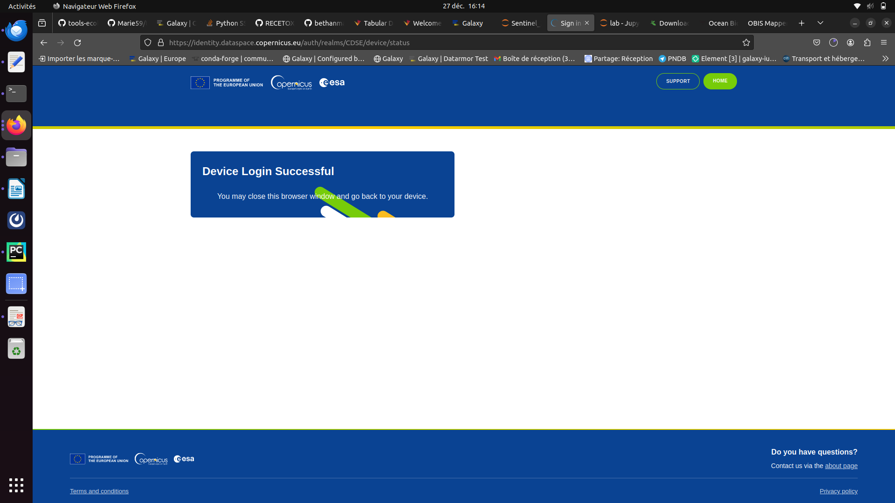
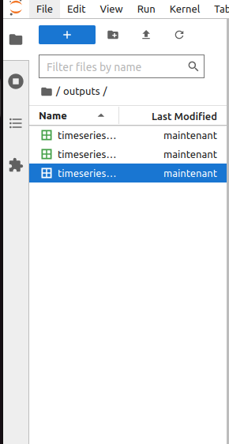

Through this tutorial you will learn here how to access and download Copernicus Data Space Ecosystem (CDSE) data through a jupyterlab Galaxy interactive tool :
This tool enables you to leverage the Copernicus Data Space Ecosystem services and access data effortlessly.
The JupyterLab service allows you to dive into data exploration, visualization, and analysis without the hassle of installing dependencies or downloading large data sets.
You will also apprehend how to use the Holoviz ecosysytem by plotting and visualising NDVI (from the CDSE) timeseries :
HoloViz provides high-level Python tools that are designed to work together to solve the entire problem of visualization, from conducting exploratory data analysis to deploying complex dashboards.
Interactive tools work differently than classical tools as it allows the user to interact with a dedicated graphical interface. This kind of tools is used to give access to Jupyter notebooks, RStudio or R Shiny apps for example.
You can come back to where you left off the tutorial anytime by clicking level.
Hands-on: Log in to Galaxy
Open your favorite browser (Chrome, Safari or Firefox as your browser, not Internet Explorer!)
The first time you use Galaxy, there will be no files in your history panel.
Copernicus Data Space Ecosystem
Hands-on: Launch the interactive tool
Copernicus Data Space Ecosystem with the following parameters:
“Do you already have a notebook?”: Start with a fresh notebook
“Include data into the environment - optional “: You don’t need anything
Click on Run Tool
Go to User > Active InteractiveTools
Wait for the Copernicus Data Space Ecosystem to be running (Job Info)
Click on Copernicus Data Space Ecosystem
Hands-on: Navigate the jupyterlab
Once you are in the jupyterlab go to :
notebooks
Then, openeo
Open the notebook NDVI_Timeseries.ipynb
You can start running your notebook. To do so you can go on the pannel displaying button right above the notebook and click on the workflow-run.
Everytime you press this button you can excecute a one by one the cells.
In the Setup section when you execute the connection cell you’ll have some actions to conduct.
First click ont the link appearing, you’re notebook should look like the following :
Once you clicked a new window opens. If you don’t have a copernicus account please create one and follow the instructions given.
If you have an account sign in and then press the green YES
You’ll be redirected to a page letting you know the connection was a success

Now, you can go back on your jupyterlab and execute the rest of the notebook.
Once you executed the entire notebook you should have a new folder in the left pannel named ndvi-results go in it.
Select the 3 files there and click right, and then copy
Then go back to the root of your path and go in the ouputs folder. There you can click right and paste the 3 NDVI files.

This part is now finished you just have to correctly close this notebook. On the top left click on files and then on Shut down.
Go back on your Galaxy window. After a couple minutes you should see your outputs turning green in your history.
Check that your data are in csv format.
galaxy-pencil, it should be csv
Click on the galaxy-pencilpencil icon for the dataset to edit its attributes
In the central panel, click on the galaxy-gearConvert tab on the top
In the lower part galaxy-chart-select-dataDatatypes, select csv
tip: you can start typing the datatype into the field to filter the dropdown menu
Click the Save button
Holoviz
Hands-on: Launch Holoviz
Holoviz with the following parameters:
“Do you already have a notebook?”: Start with a fresh notebook
“Include data into the environment - optional “: Select timeseries-basic, timeseries-masked and timeseries-smoothed
Click on Run Tool
Go to User > Active InteractiveTools
Wait for the Holoviz to be running (Job Info)
Click on Holoviz
Once, you are in the jupyterlab go in the the notebooks folder
Further information, including links to documentation and original publications, regarding the tools, analysis techniques and the interpretation of results described in this tutorial can be found here.
Feedback
Did you use this material as an instructor? Feel free to give us feedback on how it went.
Did you use this material as a learner or student? Click the form below to leave feedback.
Hiltemann, Saskia, Rasche, Helena et al., 2023 Galaxy Training: A Powerful Framework for Teaching! PLOS Computational Biology 10.1371/journal.pcbi.1010752
Batut et al., 2018 Community-Driven Data Analysis Training for Biology Cell Systems 10.1016/j.cels.2018.05.012
@misc{ecology-ndvi_openeo,
author = "Marie Josse",
title = "From NDVI data with OpenEO to time series visualisation with Holoviews (Galaxy Training Materials)",
year = "",
month = "",
day = ""
url = "\url{https://training.galaxyproject.org/training-material/topics/ecology/tutorials/ndvi_openeo/tutorial.html}",
note = "[Online; accessed TODAY]"
}
@article{Hiltemann_2023,
doi = {10.1371/journal.pcbi.1010752},
url = {https://doi.org/10.1371%2Fjournal.pcbi.1010752},
year = 2023,
month = {jan},
publisher = {Public Library of Science ({PLoS})},
volume = {19},
number = {1},
pages = {e1010752},
author = {Saskia Hiltemann and Helena Rasche and Simon Gladman and Hans-Rudolf Hotz and Delphine Larivi{\`{e}}re and Daniel Blankenberg and Pratik D. Jagtap and Thomas Wollmann and Anthony Bretaudeau and Nadia Gou{\'{e}} and Timothy J. Griffin and Coline Royaux and Yvan Le Bras and Subina Mehta and Anna Syme and Frederik Coppens and Bert Droesbeke and Nicola Soranzo and Wendi Bacon and Fotis Psomopoulos and Crist{\'{o}}bal Gallardo-Alba and John Davis and Melanie Christine Föll and Matthias Fahrner and Maria A. Doyle and Beatriz Serrano-Solano and Anne Claire Fouilloux and Peter van Heusden and Wolfgang Maier and Dave Clements and Florian Heyl and Björn Grüning and B{\'{e}}r{\'{e}}nice Batut and},
editor = {Francis Ouellette},
title = {Galaxy Training: A powerful framework for teaching!},
journal = {PLoS Comput Biol} Computational Biology}
}
Funding
These individuals or organisations provided funding support for the development of this resource
Questions:
Open image in new tab


{kind=link}
{kind=link}